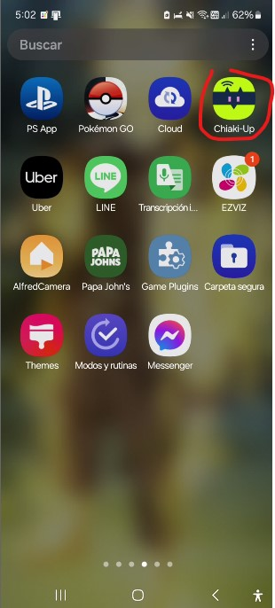

Chiaki
PlayStation 4 de forma remota y sin abandonar la comodidad de los dispositivos Android.
Para esta Guia
Requisitos para este tutorial
- PC o Notebook con Windows 7, 8, 8.1, 10
- Para descomprimir archivos .rar o .zip
Programas para este Tutorial
| Archivos | Servidores | |
|---|---|---|
| Chiaki | Mega | |
| WEB Oficial | git.sr.ht/ | |
Para Empezar este Tutorial
- Descargamos los archivos
- Descomprimimos el archivo .rar o .zip
- Chiaki-v?.?.?-Windows-x86_64.rar
- Con la última versión disponible
- Una vez descargado nuestro archivo
- 2. Lo extraemos y ejecutamos
- Para PC necesitamos
- Descargar la aplicación Chiaki-v?.?.?-Windows-x86_64.rar
- Solo abrimos chiaki.exe para ver sus funciones
- Si nos sale nuestra consola solo le damos doble clip para configurar el acceso
- Si no nos sale nada podemos buscarla manual mente
- Solo le damos al botón MAS arriba a la derecha
- Y después le colocamos la IP de nuestra consola es solo buscar en redes para saber cual IP tiene nuestra consola
- Si no abre la venta de Register Console solo nos que da
- Identificar en que versión se encuentra nuestra consola
- Dependiendo de la versión que tengamos nos pedirá
- PSN Online-ID el nombre del usuario de la consola
- PSN Account-ID (base64) El ID de PSN codificado con base 64
- Y el pin de nuestra consola
- Para este ejemplo use PS4 >=8.0 y buscando por la WEB encontré en esta WEB PSN Account ID donde colocamos el nombre de usuario y no da el ID en Base64
- Ahora solo colomas el PIN que se encuentra Ajustes/Ajuste de conexión del Uso a distancia/Añadir dispositivo<
- Si todo nos sale bien nos mostrar el mensaje que se registro y podremos conectarnos a nuestra consola
- Y listo podemos conectarnos a nuestra consola
- Para Android necesitamos
- descargar la aplicación Chiaki-Up en nuestro Celular 
- una ves descargado lo iniciamos para ver sus funciones
- cuando nuestra consola este encendida nos mostrar la información solo la seleccionamos y la cargamos para configurarlo
- al seleccionar nuestra consola solo debemos seleccionar la versión de nuestra consola por ej si estamos en 9.00 elegimos PS4> 8.0 y colocamos el nombre del Usuario en Base64 que lo obtenemos de la WEB PSN Account ID y le colocamos el PIN de Ajustes/Ajuste de conexión del Uso a distancia/Añadir dispositivo
- cuando todos los datos sean correctos nos muestra una pantalla de registro exitoso
- y nos conectara nuestro celular a nuestra consola PS4
- y Listo


×